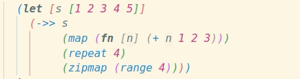
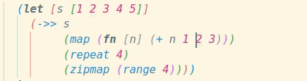
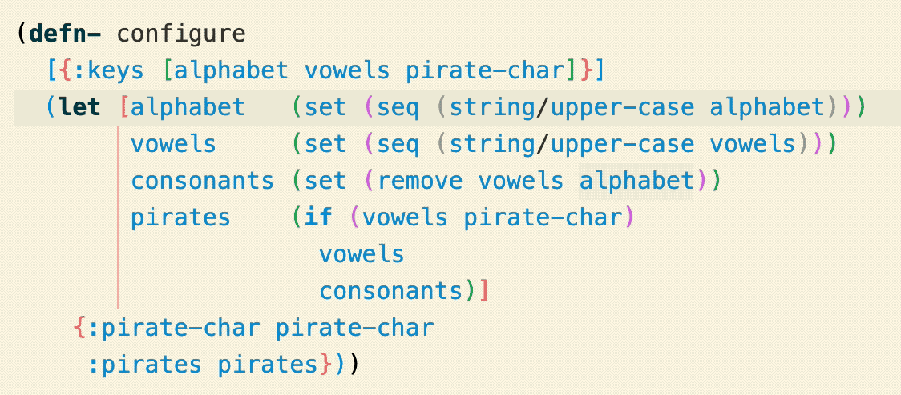
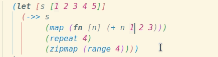
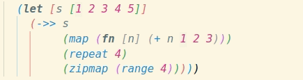

Paredit – a Visual Guide
Structural editing and navigation for Clojure.
What is Paredit?
Calva Paredit helps you navigate, select and edit Clojure code in a structural way. LISP isn't line or character oriented, it is based around S-expressions, a.k.a forms. We strongly recommend that you take advantage of the structural nature of Clojure, and have therefore put a lot of work into making Calva Paredit extra awesome.
If you are new to Paredit, consider starting with learning the Slurp Forward (pull in the next form into this form) and Barf Forward (push the last form out of this form). It will take you quite far.
Strict Mode
To protect the integrity of your code, Strict mode is enabled by default.
| Strict mode keybinding | Action | Description |
|---|---|---|
backspace |
Delete Backward | Deletes one character backwards, unless it will unbalance a form. Otherwise moves past the character instead of deleting it. If the list is empty, it will remove both open and close brackets.  |
delete |
Delete Forward | Deletes one character forwards, unless it will unbalance a form. Otherwise moves past the character instead of deleting it. If the list is empty, it is removed.  |
alt+backspace |
Force Delete Backward | Deletes one character backwards, even if it will unbalance a form.  |
alt+delete |
Force Delete Forward | Deletes one character forwards, even if it will unbalance a form.  |
Disable at your own peril. Strict mode can be toggled on/off using the Toggle Paredit Mode command, and there is a status bar indicator telling you:
| Indicator | Paredit Mode |
|---|---|
[λ] |
Strict |
(λ) |
Cave Man (strict mode off) |
λ |
No default key bindings |
Toggle between Strict and Cave Man using: ctrl+alt+p ctrl+alt+m
Prevent Unbalanced Closing Brackets
There is also a setting, calva.paredit.strictPreventUnmatchedClosingBracket, that will help you to not enter unbalanced closing brackets into the code.
Commands
The Paredit commands are sorted into Navigation, Selection, and Edit. As mentioned, Slurp and Barf are power commands, which go into the editing category. Learning to navigate structurally, using shortcuts, also saves time and adds precision to your editing. It has the double effect that you at the same time learn how to select structurally, because that is the same, just adding the shift key.
To make the command descriptions a bit clearer, each entry is animated. When you try to figure out what is going on in the GIFs, focus on where the cursor is at the start of the animation loop.
Strings are not Lists, but Anyway...
In Calva Paredit, strings are treated in much the same way as lists are. Here's an example showing Slurp and Barf, Forward/Backward List, and Grow Selection.

Navigating
(Modify these with shift to select rather than move, see below.)
| Default keybinding | Action | Description |
|---|---|---|
ctrl+right (win/linux)alt+right (mac) |
Forward Sexp | Moves the cursor forward, to the end of the current form. If at the end, moves to the end of the next form. Will not move out of lists. |
ctrl+left (win/linux)alt+left (mac) |
Backward Sexp | Moves the cursor backward, to the start of the current form. If at the start, moves to the start of the previous form. Will not move out of lists. |
ctrl+down |
Forward Down Sexp | Moves the cursor into the following list. |
ctrl+alt+up |
Backward Down Sexp | Moves the cursor into the preceding list. |
ctrl+alt+down |
Forward Up Sexp | Moves the cursor forwards, out of the current list. |
ctrl+up |
Backward Up Sexp | Moves the cursor backwards, out of the current list. |
| Unbound | Forward Sexp Or Up | Moves the cursor forward, to the end of the current form. If at the end, moves to the end of the next form. Moves out of the lists if at the end of it.  |
| Unbound | Backward Sexp Or Up | Moves the cursor backward, to the start of the current form. If at the start, moves to the start of the previous form. Moves out of the list if at the start of it.  |
ctrl+end |
Forward to List End/Close | Moves the cursor forwards, staying within the current list. |
ctrl+home |
Backward to List Start/Open | Moves the cursor backwards, staying within the current list. |
Selecting
Most of these commands are selecting ”versions” of the navigation commands above. Repeated use will grow the current selection step by step.
| Default keybinding | Action | Description |
|---|---|---|
shift+alt+right (win/linux)ctrl+w (mac) |
Expand Selection | Starts from the cursor and selects the current form. Then will keep expanding to enclosing forms. |
shift+alt+left (win/linux)ctrl+shift+w (mac) |
Shrink Selection | Contracts back from an expanded selection performed by any Paredit selection command. (In the animation the selection is first grown using a combination of Grow Selection and some lateral selection commands, then shrunk all the way back down to no selection.) |
ctrl+alt+w space |
Select Top Level Form | Top level in a structural sense. Typically where your(def ...)/(defn ...) type forms. Please note that(comment ...) forms create a new top level.  |
shift+ctrl+right (win/linux)shift+alt+right (mac) |
Select Forward Sexp |  |
ctrl+shift+k |
Select Right | Select forward to the end of the current form or the first newline. See Kill right below. (The animation also shows Shrink Selection).  |
shift+ctrl+left (win/linux)shift+alt+left(mac) |
Select Backward Sexp |  |
ctrl+shift+down |
Select Forward Down Sexp |  (You probably do not need to select like this, but you can!) |
ctrl+shift+alt+up |
Select Backward Down Sexp |  (You probably do not need to select like this, but you can!) |
ctrl+shift+alt+down |
Select Forward Up Sexp |  (You probably do not need to select like this, but you can!) |
ctrl+shift+up |
Select Backward Up Sexp |  (You probably do not need to select like this, but you can!) |
| Unbound | Select Forward Sexp Or Up |  (You probably do not need to select like this, but you can!) |
| Unbound | Select Backward Sexp Or Up |  (You probably do not need to select like this, but you can!) |
ctrl+shift+end |
Select Forward to List End/Close |  |
ctrl+shift+home |
Select Backward to List Start/Open |  |
Editing
| Default keybinding | Action | Description |
|---|---|---|
ctrl+alt+right (mac/win)ctrl+alt+. (linux) |
Slurp Forward | Moves the closing bracket forward, away from the cursor, past the following form, if any.  |
ctrl+alt+left (mac/win)ctrl+alt+, (linux) |
Barf Forward | Moves the closing bracket backward, towards the cursor, past the preceding form.  |
ctrl+alt+shift+left |
Slurp Backward | Moves the opening bracket backward, away from the cursor, past the preceding form, if any.  |
ctrl+alt+shift+right |
Barf Backward | Moves the opening bracket forward, towards the cursor, past the following form.  |
ctrl+alt+s |
Splice Sexp | Remove enclosing brackets.  |
ctrl+shift+s |
Split Sexp | Splits a string, or a list, into two strings, or lists of the same type as the current.  |
ctrl+shift+j |
Join Sexps/Forms | Joins two strings, or two lists of the same type, into one form (string/list).  |
ctrl+alt+p ctrl+alt+r |
Raise Sexp | Replaces the enclosing list with the current form.  |
ctrl+alt+t |
Transpose Sexps/Forms | Swaps place of the two forms surrounding the cursor. |
alt+upalt+down |
Drag Sexp Backward/Forward | Moves the current form to the behind/in front of the previous/next one. (See below about behavior in maps and binding boxes.)  |
ctrl+alt+shift uctrl+alt+shift d |
Drag Sexp Backward Up Drag Sexp Forward Down |
Moves the current form up/out of the current list, backwards, and down/in to the following list, forwards, keeping the cursor within the sexpr being dragged. |
ctrl+alt+shift kctrl+alt+shift j |
Drag Sexp Forward Up Drag Sexp Backward Down |
Moves the current form up/out of the current list, forwards, and down/in to the preceding list, backwards, keeping the cursor within the sexpr being dragged. |
ctrl+shift+c |
Convolute | ¯\_(ツ)_/¯  |
ctrl+shift+delete |
Kill Sexp Forward | Deletes the next form in the same enclosing form as the cursor. |
ctrl+k |
Kill Right | Delete forward to the end of the current form or the first newline. |
ctrl+alt+backspace |
Kill Sexp Backward | Deletes the previous form in the same enclosing form as the cursor. |
ctrl+delete |
Kill List Forward | Deletes everything from the cursor to the closing of the current enclosing form. |
ctrl+backspace |
Kill List Backward | Deletes everything from the cursor to the opening of the current enclosing form. |
ctrl+alt+shift+delete |
Splice Killing Forward | Delete forward to end of the list, then Splice.  |
ctrl+alt+shift+backspace |
Splice Killing Backwards | Delete backward to the start of the list, then Splice.  |
ctrl+alt+shift+p |
Wrap Around () | Wraps the current form, or selection, with parens.  |
ctrl+alt+shift+s |
Wrap Around [] | Wraps the current form, or selection, with square brackets.  |
ctrl+alt+shift+c |
Wrap Around {} | Wraps the current form, or selection, with curlies.  |
ctrl+alt+shift+q |
Wrap Around "" | Wraps the current form, or selection, with double quotes. Inside strings it will quote the quotes.  |
ctrl+alt+rctrl+alt+p/s/c/q |
Rewrap | Changes enclosing brackets of the current form to parens/square brackets/curlies/double quotes..  |
Copy to Clipboard when killing text
You can have the kill commands always copy the deleted code to the clipboard by setting calva.paredit.killAlsoCutsToClipboard to true. If you want to do this more on-demand, you can kill text by using the selection commands and then Cut once you have the selection.
clojure-lsp drag fwd/back overlap
As an experimental feature, the two commands for dragging forms forward and backward have clojure-lsp alternativs. See the clojure-lsp page.
Drag bindings forward/backward
When dragging forms inside maps and binding boxes, such as with let, for, binding, etcetera, it often makes most sense to drag each binding as a pair. And this is what Calva will do. Like so:

And like so (wait for it):

About the Keyboard Shortcuts
Care has been put in to making the default keybindings somewhat logical, easy to use, and work with most keyboard layouts. Slurp and barf forward are extra accessible to go with the recommendation to learn using these two super handy editing commands.
You can relax how Paredit's shortcuts replace VS Code built in shortcuts a bit by setting calva.paredit.hijackVSCodeDefaults to false.
There are some context keys you can utilize to configure keyboard shortcuts with precision. See Customizing Keyboard Shortcuts.
The Nuclear Option: You can choose to disable all default key bindings by configuring calva.paredit.defaultKeyMap to none. (Then you probably also want to register your own shortcuts for the commands you often use.)
In some instances built-in command defaults are the same as Paredit's defaults, and Paredit's functionality in a particular case is less than what the default is. This is true of Expand Selection and Shrink Selection for Windows/Linux when multiple lines are selected. In this particular case adding !editorHasMultipleSelections to the when clause of the binding makes for a better workflow. The point is that when the bindings overlap and default functionality is desired peaceful integration can be achieved with the right when clause. This is left out of Paredit's defaults to respect user preference, and ease of maintenance.
Happy Editing! ❤️